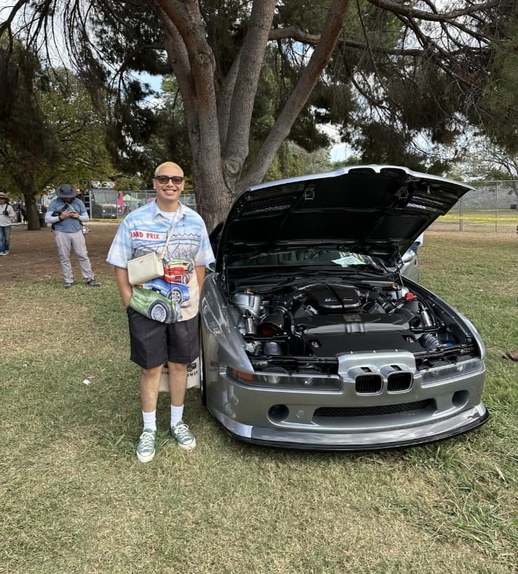

Arturo Rosas

Arturo Rosas
Customer service professional. Sales advisor. Project coordinator.
I help customers make confident decisions by listening closely, identifying needs, and delivering tailored solutions. My experience spans appliance sales, client communication, product education, team training, project coordination, and business/marketing coursework.
I am currently building a portfolio that connects my professional experience at Best Buy with my academic work in International Business & Marketing, including space for Google Analytics, marketing projects, and coursework-based case studies.
What I Do
For Customers & Clients
- Needs assessment - understanding customer goals, constraints, priorities, budgets, and decision criteria before recommending a solution
- Tailored recommendations - matching clients with high-value appliance products and explaining the practical benefits behind each option
- Clear communication - translating product details, project expectations, timelines, and next steps into language customers can trust
- Issue resolution - handling complex concerns with patience, professionalism, and a focus on customer satisfaction
For Teams & Projects
- Project coordination across customers, contractors, and internal teams to keep expectations aligned
- Product knowledge that supports stronger sales conversations and more confident customer decisions
- Training and mentoring that helps team members improve product understanding and service quality
- CRM, Microsoft Office, and documentation habits that keep customer information and follow-up organized
About
I’m a results-driven professional with experience in customer service, sales, and project coordination. I have a strong track record of assessing client needs, delivering tailored solutions, and working with cross-functional teams to support successful outcomes.
At Best Buy, I serve as an Appliance Category Advisor, where I help customers evaluate products, coordinate expectations with contractors and clients, resolve complex concerns, and train team members. I am bilingual in Spanish and bring strong communication, problem-solving, and relationship-building skills to customer-facing work.
I am currently pursuing a Bachelor of Science in International Business & Marketing at California State Polytechnic University, Pomona, with expected graduation in 2027. This portfolio will continue to grow with coursework, Google Analytics exercises, marketing projects, and applied business work.
Selected Work
Appliance Sales Advising
Delivered tailored appliance recommendations by assessing customer needs, explaining product value, comparing alternatives, and supporting confident purchase decisions in a high-consideration retail environment.
Client & Contractor Coordination
Collaborated with contractors and clients to keep project plans aligned with expectations, timelines, installation needs, and customer priorities.
Team Training
Trained and mentored team members by sharing product knowledge, sales practices, customer-service approaches, and practical ways to improve team effectiveness.
Recognition
- Current role - Appliance Category Advisor at Best Buy in West Covina, CA
- Education - B.S. in International Business & Marketing, expected 2027
- Bilingual communication - Fluent in Spanish and experienced in customer-facing support
- Portfolio growth areas - Coursework, Google Analytics, marketing projects, and applied business work
Let’s Connect
Whether you’re looking for a customer service professional, sales advisor, or project coordination candidate, I’d be glad to connect.